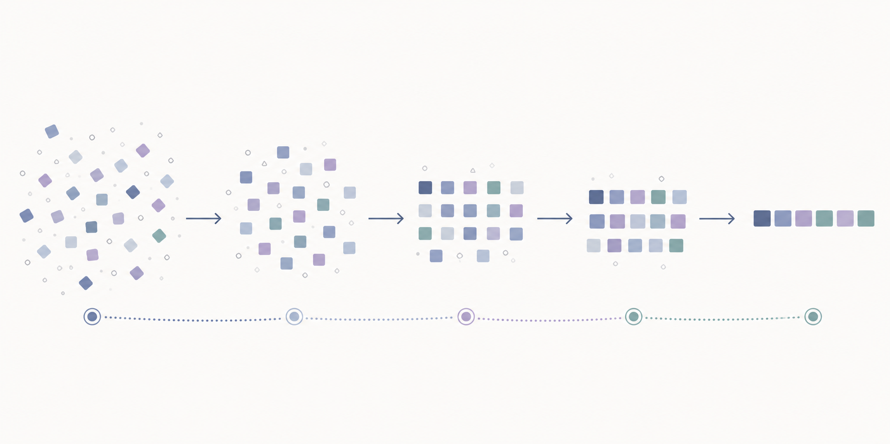
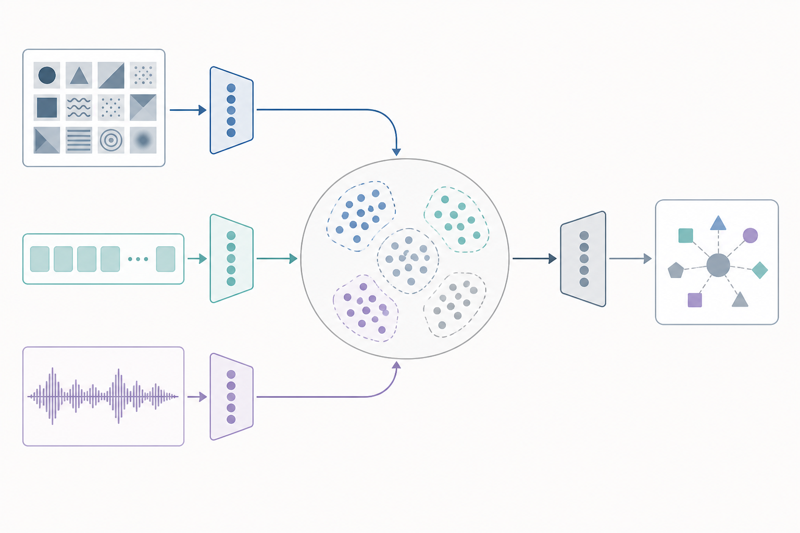
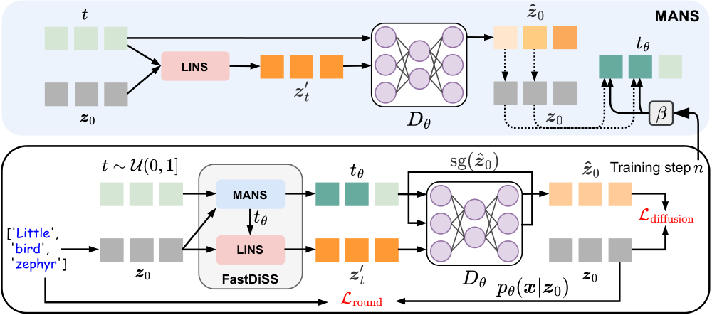
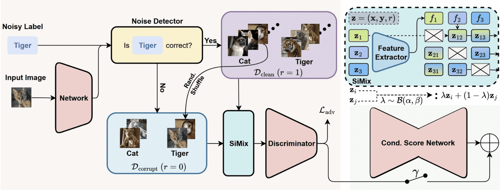
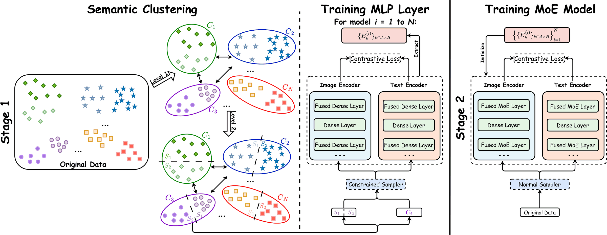

Diffusion language models
Few-step generation and better training–inference alignment for efficient sequence-to-sequence models.

AI Research Resident · FPT Software AI Center
Nguyễn Công Đạt
I work on efficient and reliable generative models. My research studies how to shorten diffusion inference, align training and inference, and preserve model quality under noisy supervision.
I am particularly interested in diffusion language models and multimodal learning. I completed my bachelor's degree in Data Science and Artificial Intelligence at Hanoi University of Science and Technology.
Updates
Research
My broader goal is to make generative models more practical by improving how they reason across sequences and combine information from different modalities.
Few-step generation and better training–inference alignment for efficient sequence-to-sequence models.

Shared representations that connect visual, textual, and temporal signals while preserving their complementary structure.

Research output
Findings of the Association for Computational Linguistics, 2026

IEEE International Conference on Computer Vision, 2025

International Conference on Learning Representations, 2026

Background
FPT Software AI Center, Hanoi
Data Science Laboratory, BKAI, HUST · Advisors: Khoat Than and Tung Doan
Hanoi University of Science and Technology · GPA: 3.8/4.0
Academic service: Reviewer for ICML 2026 and NeurIPS 2026.